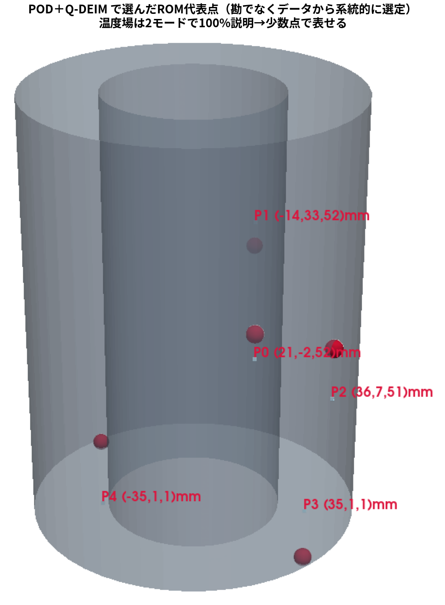
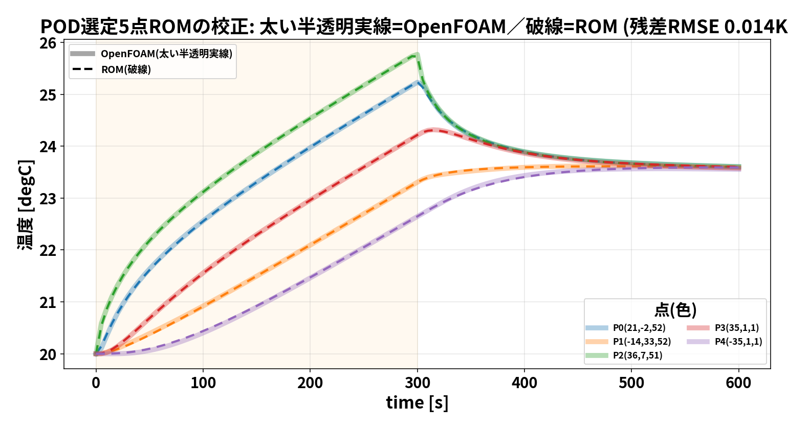
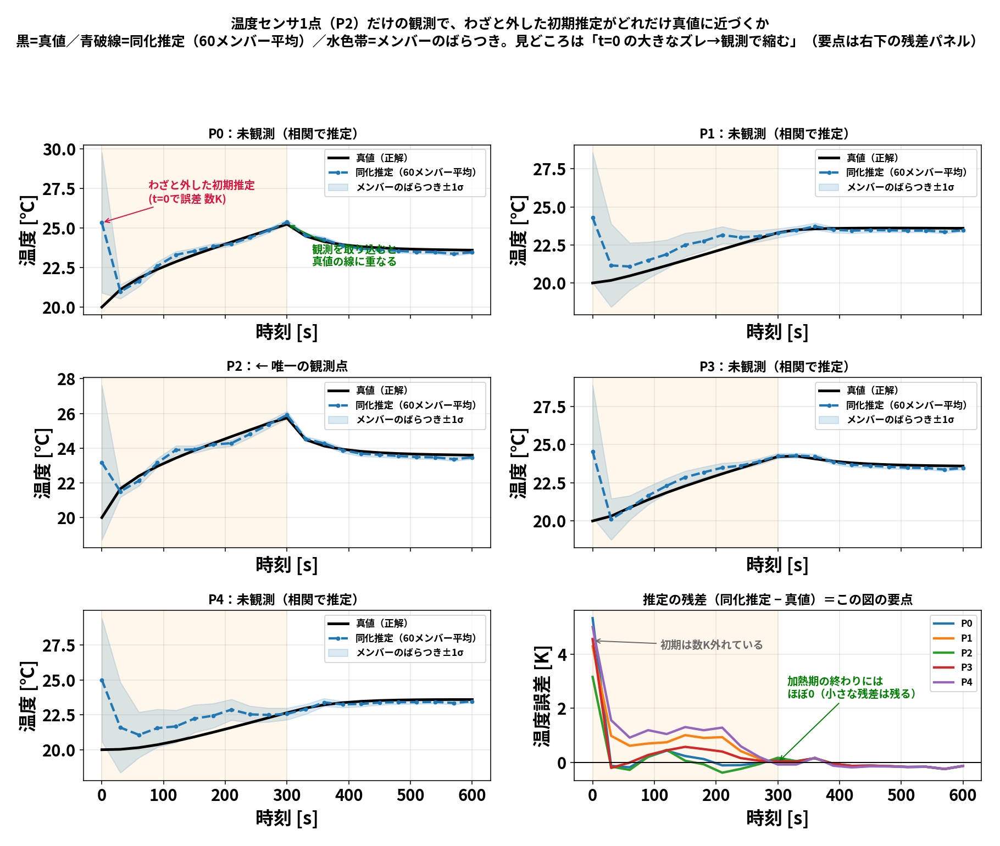
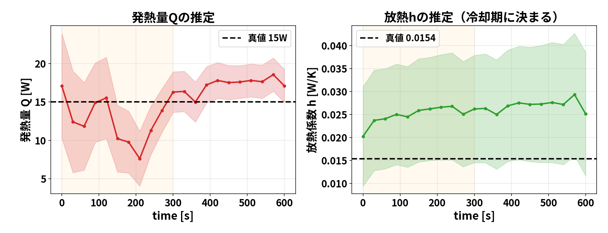
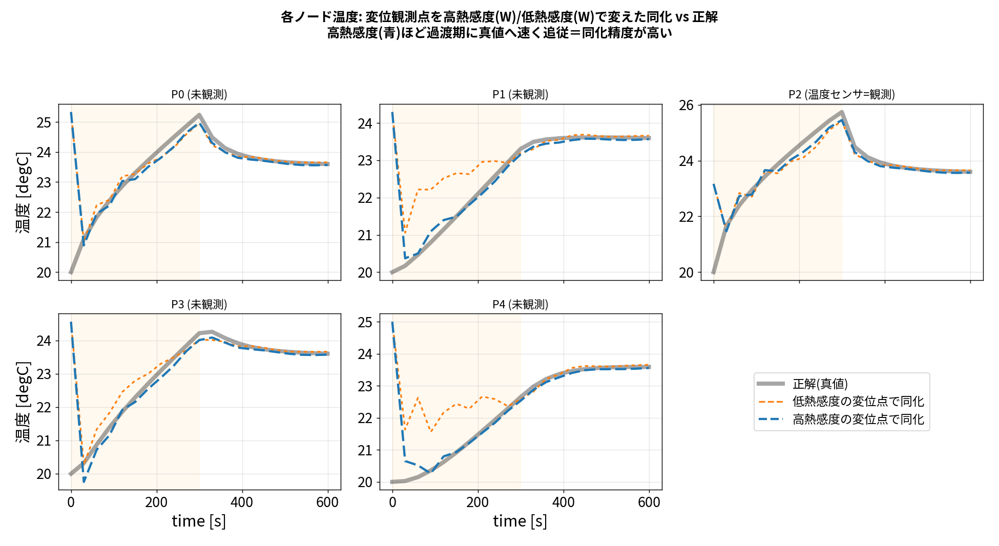
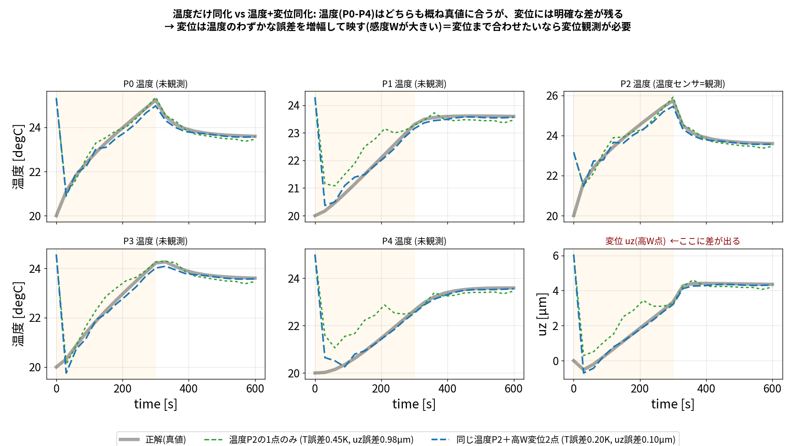
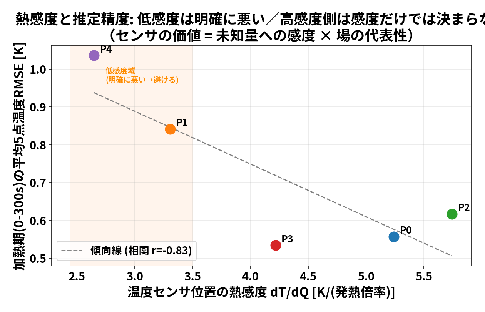
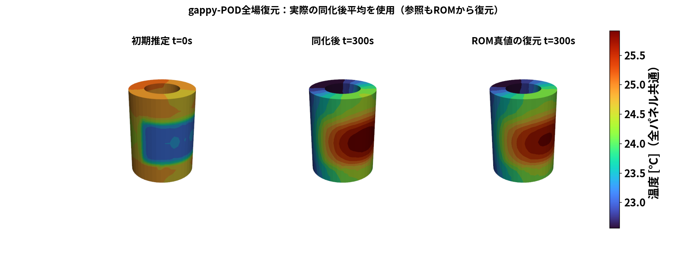
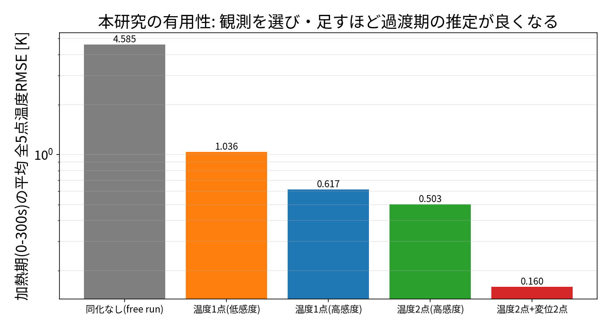

POD選定ROM × データ同化
少数観測から温度分布と変位を推定する ― 全ストーリー
目的：少数の温度・変位観測で、温度分布と変位時刻歴の推定誤差を減らせるか
手法：ROMで高速化 ／ POD＋Q-DEIMでROM代表点を選定 ／ 熱感度 W=K⁻¹Hで変位観測点を選定
▼ 下キー：各ステップで 01の数式補足 が開きます
研究の出発点：実ソルバで同化できたが「重い」
- 104：OpenFOAM(CHT)＋FrontISTR で実ソルバ同化に成功
- だが 10分間の現象に約13時間（対象時間の約78倍）
- 観測配置・メンバー数・乱数を何通りも試す研究には重すぎる
観測配置と精度・$Q/h$ の識別性を繰り返し比較できるようにする。

左=同化後(固体温度)／右=真値＋流速(実CHT)
何を検証する研究か
| 段階 | 何を計算するか | 注意 |
|---|---|---|
| 学習・校正 | OpenFOAM温度場からPOD→5点でROM校正 | 校正残差は学習適合度 |
| 基本同化 | 温度P2だけ観測→5点温度・$Q$・$h$を推定 | ROM双子実験 |
| 観測配置比較 | 温度配置／変位配置を変える | $\partial T/\partial Q$ と $W=K^{-1}H$ を区別 |
| 全場・変位評価 | 同化後5点→gappy-POD→全場→変位 | ROM復元の一致 |
STEP 1. POD で「温度場の型」を取り出す §1

- 平均場＋モード1(91.8%)＋モード2(8.1%)
- 2モードで場の 99.9% を説明
- ＝温度場は実質 2〜3 自由度 → 少数点で表せる
このモードが Q-DEIM・gappy-POD の土台になる。
▼ 数式補足：スナップショット行列 → 固有値問題 → SVD
数式補足：POD はなぜ SVD か 01 §1
スナップショット行列（各セルから自分の時間平均を引く）:
$$X=[\,u(t_1)-\bar u,\dots,u(t_m)-\bar u\,]\in\mathbb R^{N\times m}$$
「1つの型 $\varphi$ で最もよく表す」＝二乗和最大化 → ラグランジュ微分で固有値問題:
$$\max_{\|\varphi\|=1}\varphi^\top(XX^\top)\varphi\;\Rightarrow\;(XX^\top)\varphi=\lambda\varphi$$
$X=U\Sigma V^\top$ なら $XX^\top=U\Sigma^2U^\top$ → $U$の列＝PODモード、$\sigma_k^2$＝エネルギー。巨大な $C$ を作らず SVD 一発。
モードを足すと真値に近づく §1

| 使うもの | 再構成誤差 |
|---|---|
| 平均場のみ | 1.175 K |
| ＋モード1 | 0.583 K |
| ＋モード1,2 | 0.055 K |
| ＋モード1,2,3 | 0.005 K |
左端＝真値（基準）。平均場＋2モードで真値と見分けがつかない。
STEP 2. Q-DEIM で代表点を「データから」選ぶ §2

- モード行列に列枢軸QRをかけ、場を最もよく覆う点を選ぶ
- 勘の点（すべて中央高さ）と違い 底面(P3,P4)も選定
- 「離れているから」でなく「残るモード情報が大きいから」選ぶ
2ノルム条件数 ≈ 3.15（式が重複せず安定）。
▼ 数式補足：gappy 復元 と 枢軸QR の選び方
数式補足：Q-DEIM の選定基準 01 §3
$r$点の温度から全場を復元（gappy / DEIM 補間）:
$$\hat u=\bar u+U_r a,\qquad a=(U_r[P,:])^{+}(u[P]-\bar u[P])$$
復元が安定なのは $U_r[P,:]$ が良条件のとき → その点集合を選ぶ。
セル $j$ の反応ベクトル $v_j=[\phi_1(j),\dots,\phi_r(j)]$ について、既選択で説明できない残差が最大の点を順に選ぶ:
$$p_k=\arg\max_j\|(I-B_{k-1}B_{k-1}^\top)v_j\|_2$$
これを安定に実行するのが qr(U[:, :r].T, pivoting=True) の先頭 $r$ 枢軸。
STEP 3. 選んだ点で ROM を組み、校正する §3
$$C_i\frac{dT_i}{dt}=\sum_{j\ne i}K_{ij}(T_j-T_i)+q_i(t)-h\,(T_i-T_\text{air})$$

- 全点対をコンダクタンスで結ぶ一般化集中定数モデル
- $C[5],K[10],h$ を最小二乗で校正
- 当てはめ残差 RMSE 0.014 K（ほぼ完全に再現）
- $\sum C_i=1211$ J/K ≈ 鋼2.49kg（物理的に妥当）
- 0→600s が数秒 → 何度も同化を試せる
▼ 数式補足：校正の最小二乗
数式補足：ROM の校正 01 §4
def resid(vec): # vec=[C(5),K上三角(10),h(1)]=16未知
C=vec[:5]; K=tri_to_matrix(vec[5:15],5); h=vec[15]
Ymodel=integrate_rom(C,K,h) # ROMを前進積分→5点温度履歴
return (Ymodel-Yobs).ravel() # OpenFOAMとの差
sol=least_squares(resid, x0, bounds=(lb,ub))
行列形 $\dot{\mathbf T}=M\mathbf T+\mathbf b$ を RK4 で一括積分。目標は選定5点の OpenFOAM 温度履歴。
STEP 4. データ同化で 温度・$Q$・$h$ を推定 §4
拡大状態 $z=[T_0..T_4,Q,h]$（7次元）を $N=60$ メンバーEnKFで更新。温度数点でも標本共分散で $Q,h$ を逆算:
$$K=C_{zy}(C_{yy}+R)^{-1},\quad z_a^{(i)}=z_f^{(i)}+K\big(y+\varepsilon^{(i)}-H(z_f^{(i)})\big)$$
▼ 数式補足：なぜ温度だけで $Q,h$ が決まるのか（周辺化）
数式補足：EnKF＝ベイズ更新 02 §4-2
事後 $\propto$ 尤度 × 事前。ガウス同士なら事後もガウス（カルマン更新）。
$Q$ は直接測らないが、温度と共分散で結ばれるので周辺分布で決まる:
$$p(Q\mid y)=\int p(Q,T\mid y)\,dT,\quad \mathbb E[Q\mid y]=\mathbb E[Q]+\mathrm{Cov}(Q,y)\,\mathrm{Cov}(y,y)^{-1}(y-\bar y)$$
「観測の予測外れを共分散比だけ $Q$ に配分」する線形回帰。真の共分散は60メンバーの標本共分散 $C_{zy}=\frac1{N-1}\sum(z-\bar z)(y-\bar y)^\top$ で近似。
4-1. 基本設定：温度1点で本当に推定できるか §4-1

- 観測は温度P2の1点だけ（$\partial T/\partial Q$最大）
- わざと外した初期（t=0で数K）が観測で真値へ収束
- 最終温度RMSE 0.131 K（初期4.5K→）
4-1. ただし $Q,h$ は完全一致しない（可同定性） §4-1

- $Q$=17.08 W（真値15）、$h$=0.0251（真値0.0154）
- 温度1点1サイクルでは $Q,h$ は組合せでしか拘束されない
- 推定と真の $(Q,h)$ でも温度差は0.42 K（見分け不能）
4-3.（主軸）熱感度 $W=K^{-1}H$ とは §4-3
熱弾性 $Ku=H\Delta T$ より
$$u=K^{-1}H\,\Delta T=W\,\Delta T$$
- $W$ の行ノルム＝その点で変位を測ると温度情報をどれだけ拾えるか
- 上端(自由端)ほど高感度（底面固定で最も動く）
- FrontISTR(DUMPW)で計算、随伴法と一致検証済み

4-3.【本命の証明】高W変位点で同化精度が上がる §4-3

| 観測構成 | 加熱期RMSE |
|---|---|
| 温度1点のみ | 0.617 K |
| ＋変位2点(低W) | 0.535 K |
| ＋変位2点(高W) | 0.146 K |
→ $W$ は「変位観測点の選定」に使うべき指標。
4-3. 温度が合っても変位は合わない §4-3

| 温度だけ | 温度+変位 | 比 | |
|---|---|---|---|
| 温度誤差 | 0.45 K | 0.20 K | 2.2× |
| 変位 uz 誤差 | 0.98 µm | 0.10 µm | 9.5× |
4-4.（補足①）温度センサは $\partial T/\partial Q$ で選ぶ §4-4

- $\partial T/\partial Q$（発熱への温度の反応）は $W$ とは別の感度
- 低感度の点(P4)は明確に最悪＝避けるべき（相関 r≈−0.83）
- 高感度側は感度だけで決まらず「場の代表性」も効く
STEP 5. 全温度場を gappy-POD で復元 §5

- 推定5点温度から 全20,696セルを復元
- モードの混ぜ方(5個の数)を5点から逆算 → 全セルへ展開
- 物理的な型に限定するので少数点でも高精度
▼ 数式補足：gappy-POD の式とコード
数式補足：gappy-POD 01 §3 / 02
$$\hat u=\bar u+U_r a,\qquad a=(U_r[P,:])^{+}(u[P]-\bar u[P])$$
def gappy(T5): # 5点温度→全場
a,_,_,_ = np.linalg.lstsq(U[pod_cells,:], # 5×5の正方連立を解く
T5 - mean[pod_cells], rcond=None)
return mean + U @ a # 全20,696セルへ展開
5点(=モード数)なので $5\times5$ の正方問題。Q-DEIM が良条件に選ぶので解が安定。
STEP 6.【有用性】観測構成を変えて比較 §6

| 観測構成 | 加熱期RMSE |
|---|---|
| 同化なし | 4.585 K |
| 温度1点(低感度) | 1.036 K |
| 温度1点(高感度) | 0.617 K |
| 温度2点 | 0.503 K |
| 温度2点＋変位2点 | 0.160 K |
同化なし4.6K → 最良0.16K（約29倍）。変位を足すと決定的。
結論
- データ同化が必須：同化なし4.6K → 最良0.16K（約29倍）
- 代表点は勘でなく POD＋Q-DEIM：0.014Kでre現
- 観測点の選定が効く：温度は $\partial T/\partial Q$、変位は $W=K^{-1}H$ の高い上端
- 変位観測が決定的：温度2点＋変位2点で温度だけの3倍精度
- ただし $Q,h$ の同定・外挿には限界（可同定性）
数式の詳細は 01_pod_qdeim_algorithm.md ／ 本編は 02_full_story.md